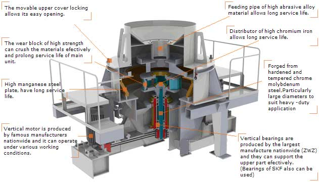

VSI Sand Making Machine

VSI sand making machine is widely used in all kinds of rocks, abrasive, fire-proof material, cement clinker, comprised, iron ore, concrete aggregate in a variety of hard and brittle materials such as broken and finely (sand).In highway building sand, and gravel optimal as appropriate.Impact crusher has simple structure, low cost, stable running, high efficiency and energy saving, impeller and vortex crushing cavity since the lining materials greatly reduces the wear parts cost and maintenance workload, impact crusher can effectively solve the raw materials such as glass broken "iron pollution" problem and steel slag in the process of "card steel" problem in the process of crushing, clever internal air circulation eliminating dust dispersion.
Working principle of Sand Making machine
The materials fall into the impeller from the head of the machine and with the function of high-speed centrifugal force, they strongly hit against and highly grind the other parts of the materials bypass flowing around the impeller in an umbrella form. After mutual impaction and between the impeller and the machine shell, the materials will move like a vortex and will be impacted, rubbed and pulverized many times. Then they will come to the required fineness controlled by screening equipment, and discharge from the bottom of the VSI Sand maker for new generation sand making machine.
Process of Sand Production Line
The raw material is transferred to jaw crusher for primary crushing by vibrating feeder, then the crushed materials are transferred to sand-making machine through belt conveyor for secondary crushing. The materials crushed will be transferred to the vibrating screen. The materials with suitable size will be transferred to sand washing machine, after being washed, then clean final products will be discharged. The others with unsuitable size will be screened from vibrating screen, then will be transferred to the sand-making machine, this forms a closed circuit manifold cycles.
How to prolong the service life of VSI sand making machine?
- Improve wear resistance of hammer plate material.In crushing medium hardness material, plate material can choose high manganese steel hammer;When broken high hardness material, the use of chromium molybdenum alloy cast steel, high chromium white cast iron materials, such as the material with good abrasion resistance and corrosion resistance
- The reasonable choice of crusher structure parameters and working parameters.Plate hammer of a power unit pure abrasion and linear velocity of rotor in the direct ratio to the secondary, so choose the appropriate linear velocity is very important.Effective way is on the premise of guarantee the product particle size, the rotary speed of the rotor to reduce as far as possible, at a relatively low speed to reduce the abrasion of the plate hammer, guarantee the product particle size.It is important to note the number of linear velocity and plate hammer to cooperate with each other, to ensure the crushing efficiency
- Improve the utilization rate of plate hammer, reduce the plate hammer replacement time.Utilization rate of the plate hammer, change the time and its structure form and fastening way has a very close relationship, the effective method is to adopt symmetrical structure, simple way of binding, or use big flap, access door casing.Not only can improve the utilization rate of plate hammer, prolong service life, also can realize the rapid and convenient board hammer change